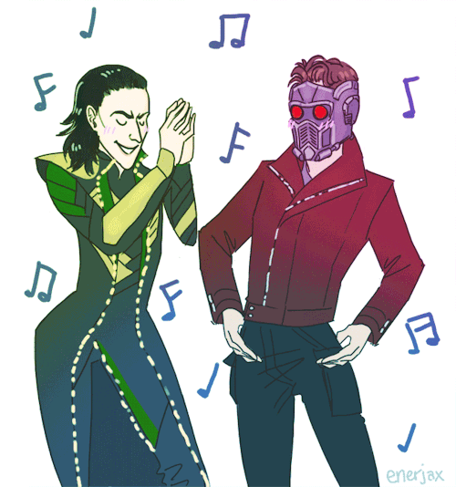
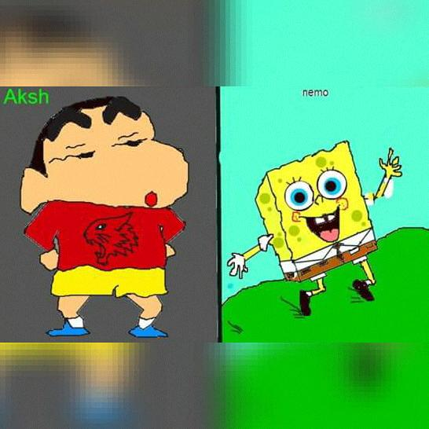

Your browser doesn't support the features required by impress.js, so you are presented with a simplified version of this presentation.
For the best experience please use the latest Chrome, Safari or Firefox browser.
Owluu!!,Here we go again
It's 23rd October now
And I want to wish my all time favorite person
a very happpy birthdayy ^_^.
You know how to navigate :P
*Happy Happy birthday to you!!
This 18th birthday is a

So We are good friends since 17th Feb of 2014 and
I remember how we used to chat all time, even when our exams were going on xP
I still thank god that I met you. _/\_
I am lucky to have you in my life.
You still never fail to surprise me with your innocence,intelligence,compassion, humor and beauty excetra excetra :P.
Today, like last year. I want to wish you a very very happy birthdayy nemo! ^_^
Stay Blessed!! O:)
I still like your little fantasies, puzzled thoughts and your innocence.
And, I want to thank you for forgiving me for all the mistakes I've done.
You are the last thing I want to lose.
--
Keep smiling and worry less.
“It isn’t what you have, or who you are, or where you are, or what you are doing that makes you happy or unhappy. It is what you think about.”
Ab ek aur gyaan bhi banta tha xD
Please Stay my friend forever
because you are my favorite person.
And I shall always be your friend. No matter what.
HAPPY BIRTHDAY OWLU!
You will be my best friend forever! ^_^

Inspite of itne mistakes kiye maine, I'll try to fix everything,everytime
I am still never letting you go. Never.*